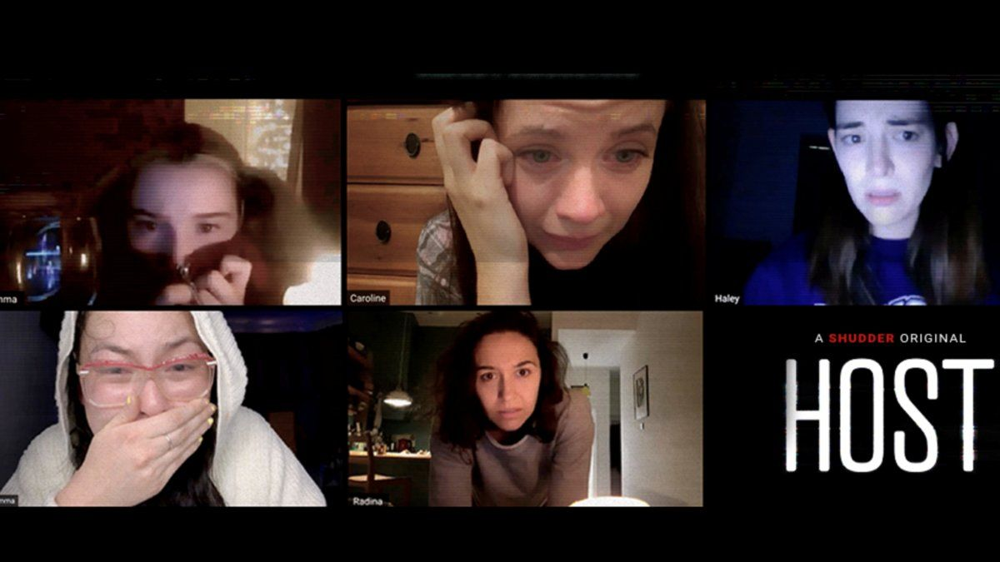
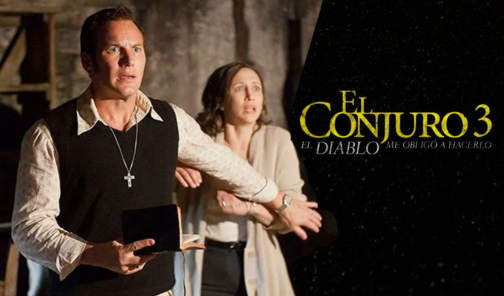
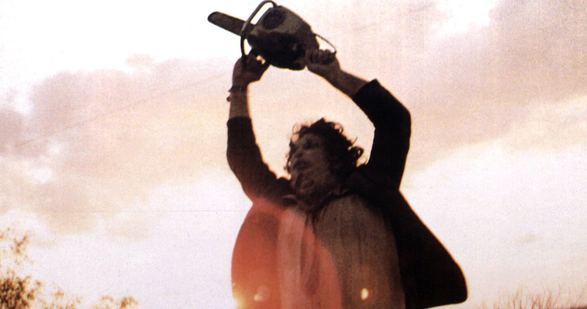
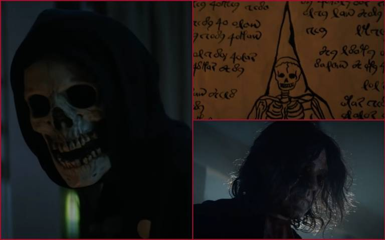

Un periodista con poca suerte descubre una serie de milagros en un pueblo de Nueva Inglaterra.
Después de investigar los acontecimientos con el objetivo de volver al estrellado descubre que
el pueblo esconde algo muy oscuro. Fecha de estreno: 2 de abril de 2021 (Estados Unidos) Director: Evan Spiliotopoulos Historia de: James Herbert Recaudación: 30.8 millones USD Presupuesto: 10 millones USD Productores: Sam Raimi, Evan Spiliotopoulos, Robert Tapert.
Host

Un grupo de amigos hace una sesión de espiritismo por Zoom durante la cuarentena. La
sesión les lleva a vivir experiencias aterradoras cuando un espíritu aterrador invade sus casas. Fecha de estreno: 4 de diciembre de 2020 (Reino Unido) Director: Rob Savage Historia de: James Herbert Recaudación: 30.8 millones USD Presupuesto: 35,000 USD Productores: Douglas Cox, Craig Engler, Emily Gotto, Samuel Zimmerman Guion:Rob Savage, Jed Shepherd, Gemma Hurley Nominaciones:British Independent Film Award for Best Sound, MÁS
Presencias del mal
Una joven institutriz es contratada por un hombre que se ha convertido en
el tutor de sus sobrinos tras las muerte de sus padres. La chica descubrirá que tanto
los niños como la casa esconden secretos perversos y las cosas no son lo que aparentan. Fecha de estreno inicial: 23 de enero de 2020 Directora: Floria Sigismondi Adaptaciones de: The Turn of the Screw Historia de: Henry James Recaudación: 19.4 millones USD Guion: Henry James, Chad Hayes, Carey Hayes, Jade Bartlett
El conjuro 3: el diablo me obligó a hacerlo

Los investigadores de fenómenos paranormales Ed y Lorraine Warren se enfrentan
a un nuevo caso: el de un hombre acusado de un terrible asesinato, que asegura haber sido poseído por un demonio. Fecha de estreno: 26 de mayo de 2021 (Reino Unido) Director: Michael Chaves Recaudación: 202 millones USD Historia de: James Wan, David Leslie Johnson, Chad Hayes, Carey Hayes Productores: James Wan, Peter Safran Saga:El conjuro
Texas Chainsaw Massacre

Un grupo de cuatro jóvenes idealistas viajan al remoto pueblo de Harlow, Texas,
para montar un negocio. Pero su sueño se convierte en una auténtica pesadilla
cuando molestan sin querer a Leatherface, el desquiciado asesino en serie. Fecha de estreno: 18 de febrero de 2022 Director: David Blue Garcia Guion: Chris Thomas Devlin Historia de: Federico Álvarez, Tobe Hooper, Rodo Sayagues, Kim Henkel Productores: Federico Álvarez, Pat Cassidy, Kim Henkel, Ian Henkel
La calle del terror - Parte 1: 1994

Tras una serie de brutales asesinatos, una adolescente y sus amigos deciden plantarle cara
al poder maligno que asola Shadyside, su famosa ciudad, desde hace siglos. Fecha de estreno: 28 de junio de 2021 (Los Ángeles) Director: Leigh Janiak Historia de: Leigh Janiak, Robert Lawrence Stine, Kyle Killen, Phil Graziadei Productores: Peter Chernin, Jenno Topping